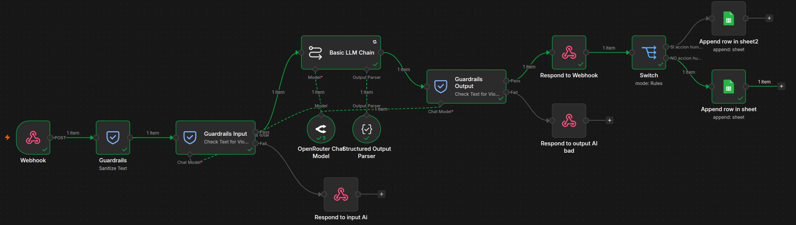
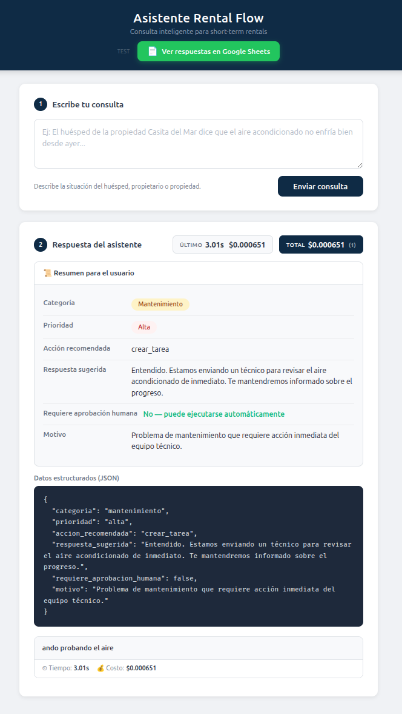

The Challenge
Los property managers de rentas cortas estancia (Airbnb, VRBO) reciben decenas de mensajes diarios de huéspedes con preguntas repetitivas: check-in, WiFi, amenidades, problemas de mantenimiento. El triage manual consumía más del 70% del tiempo operativo.
Cada mensaje requería lectura, clasificación por urgencia, y una respuesta personalizada. En temporada alta, esto escalaba a cientos de mensajes diarios, imposibles de manejar sin contratar personal adicional.
What We Built
Diseñamos un workflow end-to-end en n8n con integración de IA generativa:

- Webhook trigger que captura mensajes de huéspedes en tiempo real
- Guardrails de seguridad para filtrar contenido inapropiado antes de procesar
- Clasificación y priorización con IA (OpenRouter) por categoría: urgente, consulta, mantenimiento
- Generación de respuestas sugeridas contextualizadas al huésped y la propiedad
- Human-in-the-loop: las respuestas críticas requieren aprobación humana antes de enviarse
- Audit trail completo en Excel con cada interacción, decisión y costo
- n8n Workflow Automation
- OpenRouter (Multi-model AI)
- Webhooks & REST APIs
- Excel (Audit Trail)
- Human-in-the-loop Architecture
Results
Reducción del 70% en tiempo de triage manual. Los property managers ahora dedican su tiempo a tareas de alto valor en lugar de responder preguntas repetitivas.
Costo de ejecución menor a $0.05 por corrida (promedio de 5 llamadas de IA). El sistema es económicamente viable desde el primer día.
Trazabilidad completa: cada mensaje, clasificación y respuesta queda registrada en Excel para auditoría y mejora continua.

See It In Action
Tools & Technologies
Architecture Decisions
Why OpenRouter instead of direct API calls? OpenRouter provides access to multiple LLM providers (OpenAI, Anthropic, Mistral) through a single API. This allows me to switch models based on cost-performance ratios without changing the workflow structure. For this use case, I use GPT-4 for complex classification tasks and GPT-3.5 for simple response generation, optimizing cost while maintaining quality.
Why Excel instead of a database? Property managers already live in Excel. They know how to filter, sort, and analyze spreadsheets. By using Excel as the audit trail and configuration layer, I eliminated the learning curve. The property manager can see every decision the AI made, override classifications, and adjust response templates without touching code.
Why human-in-the-loop for critical actions? Fully autonomous systems work until they don't. For maintenance requests involving expensive repairs or guest complaints that could lead to bad reviews, I built a approval workflow. The AI drafts the response, but a human reviews and approves before sending. This catches edge cases and builds trust with the property manager over time.
Cost Analysis
Operating cost per message: $0.03 to $0.08 depending on message complexity and model selection. A typical property manager handling 100 messages per day spends $3 to $8 daily on AI processing. Compare this to hiring a virtual assistant at $15/hour who can handle 30 messages per hour ($0.50 per message).
Monthly infrastructure cost: The n8n workflow runs on a $20/month VPS with 2GB RAM and 2 vCPUs. This handles up to 10,000 messages per month. For larger operations, I scale horizontally by adding more workers, keeping the cost per message constant.
ROI calculation: A property manager spending 30 hours per week on message triage at $25/hour = $750/week in labor costs. The automated system costs $50/week to operate. That's a 93% reduction in operational costs, or $2,800/month in savings.